Switch PP underflow glitch
| PRAMA Initiative a également une page sur Switch PP underflow glitch. |
The switch PP underflow glitch is a glitch in Pokémon Red, Blue, and Yellow, where a partial trapping move is automatically selected when it has 0 PP.
This causes the user to either get 63 PP with three PP Ups applied if no PP Ups were used, or the user to lose the effect of a PP Up if at least one was used.
This glitch or the Hyper Beam automatic selection glitch can be used to get a 'FF' PP value for the Generation I max stat trick.
Requirements
1. Access to a Trainer who can switch Pokémon. These include Jugglers (such as the one in Silph Co. 5F) and Agatha, as well as real world link battle Trainers.
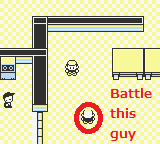
2. A Pokémon that can take an attack which is slower than the opponent's Pokémon, and knows Bind, Clamp, Fire Spin or Wrap with 1 PP, e.g. a level 21 Victreebel against the Juggler on Silph Co. 5F's level 29 Kadabra.
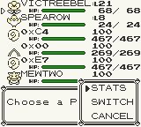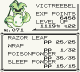
Steps
1. Battle the Trainer who can switch. Before this, it's a good idea to save in case the following steps don't happen.
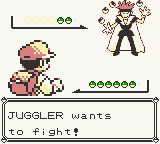
2. Use the partial trapping move and have it hit. As you are slower, you will need to take a hit from the opponent (but it doesn't have to be an attacking move).
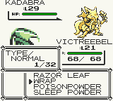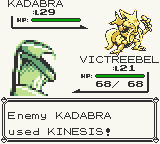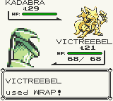
3. On the same turn, or during a turn where the attack continues have the opponent switch. The partial trapping move will be used again and its PP will underflow from 0 if it was originally 1.
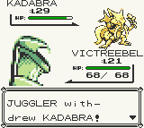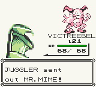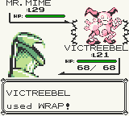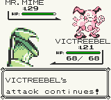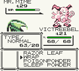
PP underflow explanation
If the PP was 0 with no PP Ups applied, it will underflow to 63 with full PP Ups applied. If it was 0 with at least one PP Up applied, it will underflow to 63 with one less PP Up applied.
This is because in Pokémon Red, Blue, and Yellow and Pokémon Gold, Silver and Crystal, PP and the amount of PP Ups applied are stored in the same byte. If bit 6 (+40h) is set, then it indicates that one PP Up has been used. If bit 7 (+80h) is set, then it indicates that two PP Ups have been used. If bit 6 and 7 (+C0h) are set, then it indicates that 3 (the maximum amount of) PP Ups have been applied.
Examples: A value of 40h means 0 PP with 1 PP Up applied, a value of 80h means 0 PP with 2 PP Ups applied, and a value of C0h means 0 PP with 3 PP Ups applied. A value of 3Fh means 63 PP with 0 PP Ups applied.
There are only 64 (80h-40h) possible values for PP itself, meaning that the maximum amount of PP is 63.
External links
See also
- Hyper Beam automatic selection glitch - Another way to underflow the PP of a move which involves a different method.
- Freeze top move selection glitch - Allows the underflow of the PP of any move, but involves a link battle, and the PP value may not be kept.
- Threefold PP Up removal glitch - A derivative of this glitch that allows a Pokémon to obtain 0 PP with no PP Ups, even if PP Ups were used in the past.
- Variable PP glitch - Involves the glitch move TM23, and possibly more glitch moves.